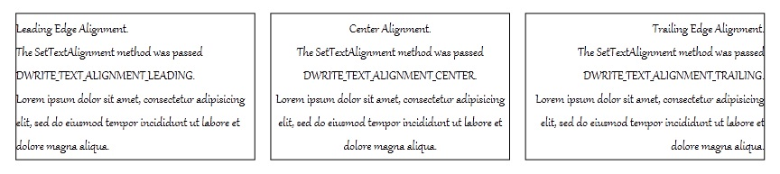

You can align DirectWrite text by using the SetTextAlignment method of the IDWriteTextFormat interface, as shown in the following code that centers the text.
HRESULT hr = pTextFormat_->SetTextAlignment(DWRITE_TEXT_ALIGNMENT_CENTER);
if (FAILED(hr))
{
// Report the error
}
The text can be aligned to the leading or trailing edge of the layout box, or it can be centered. The following illustration shows text with the alignment set to DWRITE_TEXT_ALIGNMENT_LEADING, DWRITE_TEXT_ALIGNMENT_CENTER, and DWRITE_TEXT_ALIGNMENT_TRAILING, respectively.

[!Note]
The alignment is dependent on reading direction, the above is for left-to-right reading direction. For right-to-left reading direction it would be the opposite.
Â
An IDWriteTextLayout object will use the alignment that has been designated for the IDWriteTextFormat provided by you when creating the layout. To change the text alignment, use IDWriteTextLayout::SetTextAlignment.
Â
Â